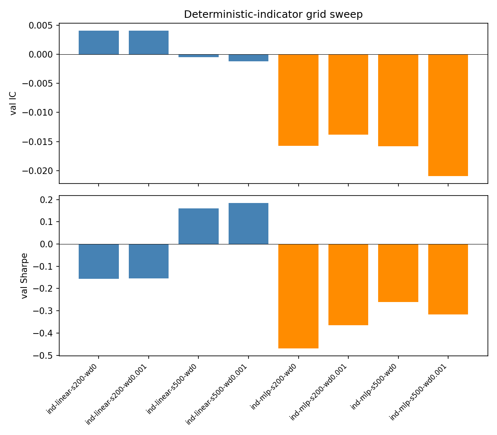
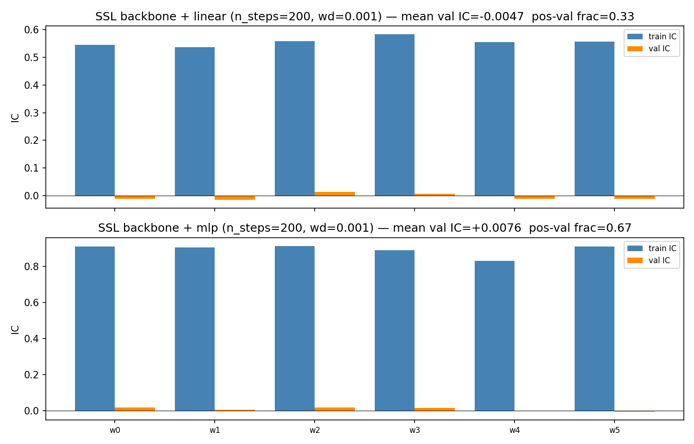
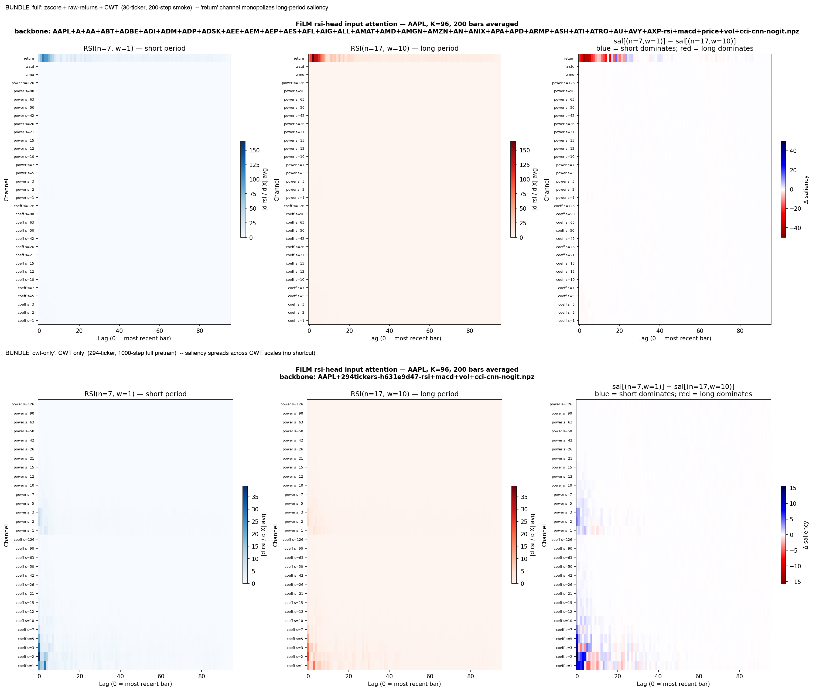

Factor¶
Cross-sectional rank-IC scorer (tinygrad). Two input paths feed the same head + objective:
- The supervised-
cnn-pretrained CWT backbone produced byss-replay --decoder cnn, loaded viass_features.load_backbone. The replay trainer's per-target reconstruction heads (RSI / MACD / vol / CCI) are discarded; only the shared conv stack survives into the npz. Note: this is not the strict-SSL--decoder masked-aepath —cnnuses self-derived but explicit per-target labels. The pages here use "SSL backbone" in section headers as shorthand; for the precise decoder breakdown see replay-decoders. IndicatorGridConfig— a 74-channel deterministic stack of strided RSI/CCI grids, MACD over a fast-period grid, realized vol over a window grid, and rolling Pearson coherence between short/long realized vol — fed throughidentity_backbone(K=1, F=74).
Both paths share the rest of the stack: a fresh linear or MLP head
initialized per run, an AdamW loop minimizing -pearson_rank_ic
against forward log-returns at rebalance granularity, and a per-window
walk-forward wrapper that rolls a fresh head across rolling
train/val splits. Sharpe is logged via block_sharpe for evaluation
only — rank-IC gives a per-rebalance dense gradient signal that
converges much faster than direct Sharpe optimization.
| Path | Backbone | Head |
|---|---|---|
SSL (train_scorer) |
supervised-cnn replay-pretrained conv (frozen by default; optionally fine-tuned in Stage 2 at 0.1× lr) |
fresh linear or MLP, learns rank-IC |
IndicatorGridConfig (train_scorer_indicators) |
identity (no learned weights — K=1, F=74 strided-RSI/CCI/MACD/vol stack passes straight through) |
same rank-IC head |
The IndicatorGridConfig path is there so we can compare does the
supervised-cnn backbone beat hand-crafted indicators on the same
head + objective head-to-head — the +0.012 mean val IC of the
deterministic baseline is the bar.
How factor uses the replay backbone¶
factor.train.train_scorer is two-stage:
- Stage 1 (always runs). The frozen backbone is forward-passed
over every (date, ticker) feature row once up front
(
precompute_inputs); latents materialize on host as numpy. A fresh linear or MLP head streams Tensor minibatches of that cached representation and runsn_stepsAdamW updates against rank-IC. Cheap — the backbone forward is amortized. - Stage 2 (optional, off by default). When
finetune_steps > 0, the cached representation is dropped (it goes stale once weights move) and the encoder is re-applied per-step on raw features. Backbone params getlearning_rate * finetune_lr_scale(default 0.1×) so the pretrained features get nudged, not overwritten; head stays at full lr.
feat_mu / feat_sd (input z-norm) are not optimized in either
stage — the backbone keeps seeing the same input distribution it was
pretrained on. The input bundle factor builds at runtime is the
polar Morlet bundle from
ss_features.load_ticker (build_features_and_targets) — 7 channels
per scale (|c|, |c|², cos(arg), sin(arg), g, g², log_L2_amp) over
a window_cols-bar lag stack. Fresh runs against the new-bundle
backbones in Output/ are end-to-end consistent; older 2-channel
backbones in Output/ are stale and will fail with a shape mismatch
on the first conv (worth deleting before they confuse anyone).
Walk-forward eval (train_scorer_walkforward) is the OOS protocol;
the rolling-train-and-fresh-head loop is the only honest answer to
overfitting in this regime.
The deterministic indicator baseline¶

What 74 hand-designed channels can buy you on a 297-ticker universe at 20-day horizon: mean val IC of +0.0120 with a linear head, 5/6 windows positive. The MLP head triples train IC and then gives most of it back on val — the classic overfit signature. The +0.012 number is the line every later experiment has been trying to clear, and the Leaderboard records every arm that didn't.
Supervised-cnn backbone — does the encoder beat the indicators?¶

The promise of pretrain on the indicator-reconstruction objective
was simple: an encoder that's been forced to encode RSI / MACD /
vol / CCI from the CWT bundle should expose return-predictive
geometry the linear-on-indicators path can't reach. The promise is
testable. The figure above is the test — six rolling windows, val
IC overlaid against the indicator
baseline. The takeaway
is gentle and honest: the supervised-cnn latent does not lift
val IC off the +0.012 ceiling
(factor-ssl-walkforward).
The data is the bottleneck, not the encoder. Whether a strict-SSL
--decoder masked-ae backbone —
encoder pretrained on masked-CWT autoencoding instead of indicator
reconstruction — would clear that ceiling is an
open question;
the masked-AE path is wired but no production npz exists for it.
Why this matters for the broader research program is unpacked in the Notes and the supervision-is-binding finding.
What the supervised-cnn latent attends to¶

A learned-attention readout of which slices of the CWT bundle each indicator head reaches into. Worth lingering on: the heads partition the latent space cleanly — RSI activates the high-frequency end, vol activates the long-scale end, MACD lands in the middle. The encoder has learned the structure of the indicator family. It just can't turn that structure into return alpha at this universe and horizon — which is itself a finding, not a failure.
The numbers in tabular form¶
The aggregate verdicts and per-window stats live on the Leaderboard and the factor indicator-IC baseline page. The list of pivots that tested whether the +0.012 is horizon-bound, universe-bound, or supervision-bound is in the Notes closing section.